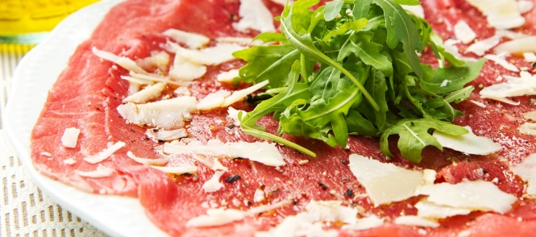

Carpaccio

Land van herkomst
Het gerecht werd bedacht in 1950 in Venetië, Italië. Giuseppe Cipriani,Carpaccio is oorspronkelijk een gerecht van dungesneden rauwe runderlende (contrefilet, maar zonder vet randje, en ontdaan van alle kleine ongerechtigheden), met een dressing van zelfgemaakte mayonaise (verhouding: 2 eierdooiers, 200 gr. neutrale olijfolie of zonnebloemolie, sap van een halve citroen of twee eetlepels witte azijn, zout en peper), worcestersaus, citroensap, melk, zout en witte peper.
Ingredienten
Voor 4 personen
- 300 g rundercarpaccio
- Halve eetlepel balsamicoazijn
- 3 eetlepels olijfolie truffelaroma
- 30 g rucola
- 50 g parmezaanse kaas
Bereiden
- Leg de plakjes carpaccio naast elkaar op een schaal. Klop de azijn, olie, peper en eventueel zout in een kommetje tot een dressing.
- Druppel de dressing over de carpaccio. Snijd de rucola in kleine stukjes en verdeel over de carpaccio.
- Schaaf de Parmezaanse kaas in flinterdunne plakjes en leg op de carpaccio.